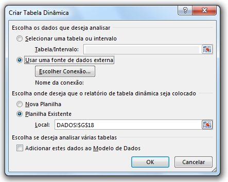
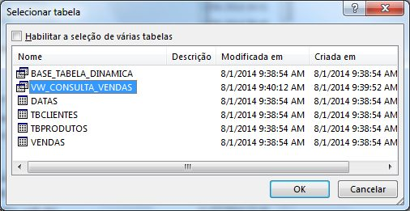
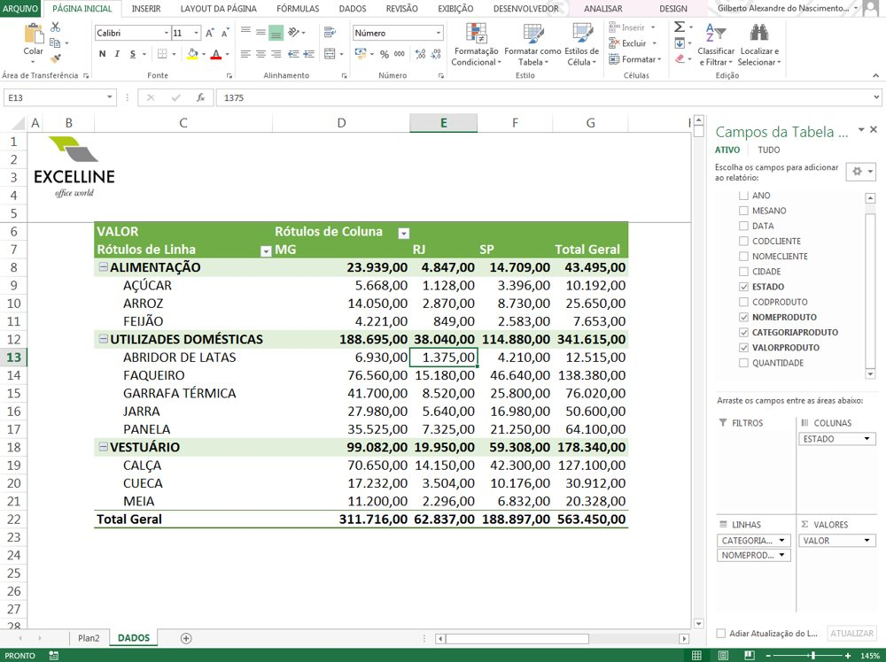

No capítulo anterior criamos a tabela dinâmica a partir de uma lista na própria pasta de trabalho. Mas ela pode ter origem em uma fonte externa, como outro arquivo Excel, um arquivo TXT ou bancos SQL, Access, Oracle, MySQL e qualquer outro acessível por ODBC, o que muda bastante o alcance da análise.
Baixe a planilha do exercício: modelo-excel-tabela-dinamica-banco-de-dados.xlsx. Ela traz os exemplos deste capítulo com as fórmulas funcionando: altere os valores azuis e veja o resultado. Em vez de um banco Access, a planilha traz três tabelas relacionadas e a consulta que as junta e pode servir de fonte externa para você praticar o Power Query.
O exemplo com Access
Para este artigo usamos um banco em Microsoft Access, chamado BANCO_MODELO.accdb, salvo previamente em disco. Com uma pasta de trabalho nova, o caminho é INSERIR, TABELA DINÂMICA e escolher a opção de usar uma fonte de dados externa, com ESCOLHER CONEXÃO.

Na tela de conexões clique em PROCURAR MAIS, pois vamos escolher uma nova origem, localize o arquivo e clique em ABRIR. O Excel interpreta os objetos do arquivo Access e mostra as tabelas e consultas disponíveis e no exemplo escolhemos a consulta de vendas.

De volta à tela de criação, marque ADICIONAR ESTES DADOS AO MODELO DE DADOS, para reaproveitar o mesmo objeto em outras tabelas dinâmicas e otimizar memória e tempo de processamento.
Montando a análise
Arraste os campos desejados para as áreas de linhas, colunas, valores e filtros e pronto. A partir desse ponto os métodos são os mesmos da tabela dinâmica sobre uma lista, com a vantagem de que o banco de dados continua sendo a fonte única e a planilha apenas o visual da análise.

O que mudou desde este capítulo
Hoje, o caminho mais indicado para conectar o Excel a bancos de dados e a outras fontes externas é o Power Query, na guia Dados, em Obter Dados. A ideia central deste capítulo, usar a fonte externa como origem única e a planilha como a vitrine da análise, continua valendo.